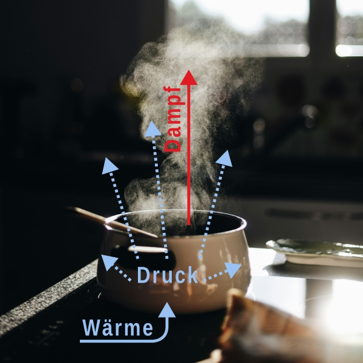
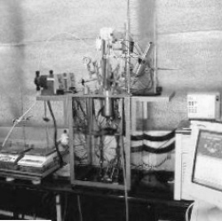
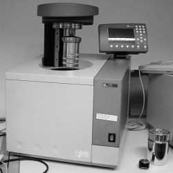
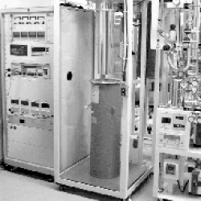

\gdef\sub#1{_{\mathrm{#1}}} \gdef\unit#1{\mathrm{#1}} \gdef\celsius{\unit{°C}} \gdef\joule{\unit{J}} \gdef\kelvin{\unit{K}} \gdef\kilogram{\unit{kg}} \gdef\mole{\unit{mol}} \gdef\pascal{\unit{Pa}} \gdef\joulepermole{\frac{\joule}{\mole}} \gdef\jouleperkilogram{\frac{\joule}{\kilogram}} \gdef\jouleperkelvin{\frac{\joule}{\kelvin}} \gdef\jouleperkelvinperkilogram{\frac{\joule}{\kelvin\,\kilogram}} \gdef\jouleperkelvinpermole{\frac{\joule}{\kelvin\,\mole}}
Wir haben im letzten Abschnitt die innere Energie U kennengelernt. Diese agiert wie ein Puffer für die Systemenergie und kann sowohl durch Wärme Q als auch Arbeit W verändert werden. Das hatten wir so aufgeschrieben:
\Delta U = Q + W.
Wir hatten weiterhin festgestellt, dass die innere Energie U eine Zustandsfunktion ist. Dadurch verhält sie sich ähnlich wie die potenzielle Energie. Das heißt, dass die Änderung unabhängig vom Weg ist.
Der erste Hauptsatz der Thermodynamik besagt, dass in einem isolierten System die innere Energie konstant bleibt
\Delta U = 0,
da weder Wärme noch Energie mit dem System ausgetauscht werden können.
In einem geschlossenen System herrscht ein konstantes Volumen V und dadurch fällt die Expansionsarbeit W = -p \Delta V weg, da \Delta V = 0. Dadurch kann eine Änderung der inneren Energie nur durch Abgabe oder Zugabe von Wärme erfolgen.
\Delta U = Q.
Diese Wärme lässt sich nun als Produkt Q = C_V \Delta T aus Wärmekapazität bei konstantem Volumen C_V und Temperaturveränderung \Delta T schreiben.
1 Die Energie für den Alltagsgebrauch
Nun steigen wir in die Thermodynamik ein, die für uns Lebewesen und für uns im alltäglichen Leben die größte Rolle spielt. Zuerst stellen wir fest, dass wir und alle anderen Lebewesen offene Systeme sind. Offene Systeme können Masse, Arbeit, und Wärme mit ihrer Umgebung austauschen.
Offene Systeme haben, im Gegensatz zu isolierten und geschlossenen Systemen, die Möglichkeit, sich auszudehnen. Wenn wir also Wärme zu einem offenen System leiten, dann bleibt der Druck p konstant, weil sich das Volumen V vergrößert. In einem geschlossenen System dagegen, steigt der Druck an, weil das Volumen sich nicht vergrößern kann.


1.1 Die Enthalpie ist Deine Freundin
Wenn Wärme auf offene Systeme bei konstantem Druck einwirkt, dann wird ein Teil dieser Energie zur Ausdehnung des Systems genutzt und nicht mehr in die innere Energie hinein gesteckt. Dieser Teil geht wieder in die Umgebung zurück. Wir brauchen von daher eine neue Form von Energie, die Enthalpie H genannt wird, um diesen Vorgang zu erfassen. Die Enthalpie ist so definiert
H = U + pV. \tag{1}
Hierbei ist p der Druck, V das Volumen des Systems und U die bekannte innere Energie. Die Einheit der Enthalpie ist Joule [\joule]; es ist also auch eine Energieform.
Aber was soll das? Warum brauchen wir einen zusätzlichen Buchstaben? Nun, das liegt an den Bedingungen unter denen unser System läuft. Die Enthalpie erfasst diejenige Energie, die zwischen System und Umgebung bei konstantem Druck ausgetauscht wird.
Die Enthalpie kann auf viele offene Systeme angewendet werden. Es kann eine chemische Reaktion sein, die im Reagenzglas schnell abläuft oder langsam über mehrere Wochen in einem See. Es kann das Grillfeuer sein, dass in der Feuerstelle brennt, oder einen gesamten Wald in Spanien vernichtet. Es kann auch auf Dich angewendet werden, wenn Du tanzt, Basketball oder Fussball spielst, oder Fahrrad fährst. Oder auf den Baum vor Deinem Fenster, der gerade Kohlendioxid in Zucker umwandelt. Alles das passiert bei konstantem Druck; und in diesem Fall ist das der Atmosphärendruck p\sub{atm}.
1.2 Unterschied zur inneren Energie
Die Veränderung der Enthalpie kann allgemein so ausgedrückt werden
\Delta H = \Delta U + \Delta\left( pV \right). \tag{2}
So wie bei der inneren Energie, gibt es auch bei der Enthalpie keine absoluten Werte. Jede Veränderung der Enthalpie gilt immer nur zwischen zwei Zuständen: Anfang und Ende. Na gut; wenn ein Teil der Wärmeenergie nicht mehr in die innere Energie hineingesteckt wird, wie unterscheiden sich Enthalpie und innere Energie? Der Unterschied sieht so aus:
\Delta H - \Delta U = p \Delta V \tag{3}
Wie es dazu kommt kannst Du in der Herleitung nachlesen, wenn Du magst. Überlege es Dir aber gut, bevor der Schock kommt. Die Herleitung ist kein Lerninhalt, der abgefragt wird.
Hey! Klapp das hier nicht auf, wenn Du geistig gesund bleiben willst.
Ok, Du wurdest gewarnt.
Zuerst schreiben wir in Equation 1 den Ausdruck \Delta(pV) um. Dabei behandeln wir es wie alle anderen Delta Größen
\Delta \left( pV \right) = p\sub{Ende} V\sub{Ende} - p\sub{Anfang} V\sub{Anfang}.
Jetzt setzen wir konstanten Druck p voraus und dadurch wissen wir, dass p\sub{Anfang} = p\sub{Ende} ist. Somit können wir den Umgebungsdruck p statt Anfangs- und Enddruck verwenden und schreiben
\Delta \left( pV \right) = p V\sub{Ende} - p V\sub{Anfang} = p \left( V\sub{Ende} - V\sub{Anfang} \right) = p \Delta V.
Nun verwenden wir das in Equation 2, womit sich
\Delta H = \Delta U + p \Delta V
ergibt. Als letzter Schritt bleibt die Umstellung zu einer Differenz zwischen Enthalpie und innerer Energie:
\Delta H - \Delta U = p \Delta V.
Dieses Ergebnis sagt Dir, dass die Enthalpieänderung immer größer als die Änderung der inneren Energie ist. Mit anderen Worten: unter konstantem Druck wird immer mehr Energie ausgetauscht als sich in der inneren Energie wiederfindet. Ist doch klar; ein Teil wurde für die Ausdehnung des Systems verwendet, falls das System sich ausdehnen lässt.
Eine weitere Erkenntnis sagt Dir, das der Unterschied zwischen Enthalpie und innerer Energie nur dann eine Rolle spielt, wenn das Volumen des Systems sich ändert. Nun, das passiert entweder wenn Gase gebildet oder verbraucht werden; oder, wenn die Temperaturen sehr hoch sind, weil dann p V hoch wird. Dagegen sind die Änderung von Enthalpie und innerer Energie für viele Reaktionen bei denen nur feste oder flüssige Stoffe beteiligt sind fast gleich.
Für die Biologie spielt die Enthalpie eine entscheidende Rolle, weil im Metabolismus immer Gase auftauchen. Das passiert bei der Atmung als auch bei der Photosynthese. Dadurch ist die Enthalpie die entscheidende Größe beim Energieaustausch und Energieverbrauch von Lebewesen.
1.3 Die Größe der Enthalpie
Tendenziell neigt die Enthalpie, größer als die innere Energie zu sein. Das zeigt Equation 3. Wenn wir wissen, wie der Unterschied berechnet wird, bleibt immer noch die Frage: wie können wir das messen? Denn die Volumenausdehnung findet praktisch unter “freiem Himmel” statt. Die Lösung ist genauso einfach wie bei der inneren Energie bei konstantem Volumen: eine Enthalpieänderung entspricht genau der Zugabe oder Abgabe von Wärme zwischen System und Umgebung; allerdings bei konstantem Druck.
\Delta H = Q \tag{4}
Wie das jetzt zustande kommt, siehst Du in der Herleitung. Diese ist kein Lerninhalt, sondern dient der Schockstarre, wegen dem Buchstabensalat. Trau Dich also!
Nicht schon wieder Buchstaben! Das ist die zweite Warnung. Klapp das bloß nicht auf!
Du scheinst nicht für Warnungen, zugänglich zu sein. Also, zieh Dir das rein.
Zuerst schreiben wir Equation 2 nochmal auf und ersetzen den Ausdruck \Delta(pV) durch das bereits gewonnen Ergebnis p \Delta V.
\Delta H = \Delta U + p \Delta V
Wie vorhin schon geschehen, verwenden wir wieder die Definition der Änderung der inneren Energie \Delta U = Q + W und erhalten
\Delta H = Q + W + p \Delta V.
Wir nehmen an, dass unser System nichts anderes als Expansionsarbeit W = -p \Delta V macht und arbeiten das ein als
\Delta H = Q + \left( -p \Delta V \right) + p \Delta V.
Nun sehen wir, dass sich die Volumenarbeit aufhebt und es bleibt übrig
\Delta H = Q.
Nun ja, die Theorie sagt, dass die Arbeit, die das System bei der Ausdehnung leistet, von einem Teil der Wärmeenergie geleistet wird. Dieser Teil der Enthalpie macht, dass die Arbeit auf eine mathematische Art verschwindet; durch so ein Plus Minus gleich Null Ding. Das war doch eine sehr schöne Herleitung.
1.4 Die Macht der Theorie
Am Rande betrachtest Du dieses komische Jonglieren der Buchstaben mit Argwohn. In der Naturwissenschaft bezeichnen wir die Buchstaben als Variablen, weil sie unterschiedliche Werte annehmen können. Sie sind eben variabel. Aber es sind sie, und nicht die Zahlen, die Dir erlauben, den Blick über alle Größenbereiche und Zeiten schweifen zu lassen.
Die Ergebnisse aus Abschnitt 1.2 und Abschnitt 1.3 samt ihrer Herleitungen sind theoretischen Ergebnisse. Sie zeigen Dir, was alles möglich und brauchbar ist mit der Kraft der Gedanken.
1.5 Reaktionstypen bei konstantem Druck
Kommen wir zurück zum wesentlichen. Das Vorzeichen der Enthalpieänderung zeigt an, in welcher Richtung Wärmeenergie fließt. Das passiert auf drei unterschiedliche Arten:
\Delta H < 0: Das ist eine exotherme Reaktion. Und wie immer, wenn ein Minus auftaucht beziehen wir uns auf das System, dass Energie an die Umgebung abgibt. In der Nähe einer exothermen Reaktion wird es warm.
\Delta H = 0: ein eher seltener jedoch nicht unmöglicher Fall. Hierbei findet kein Austausch von Wärme zwischen Umgebung und System statt.
\Delta H > 0: Wenn die Enthalpieänderung größer als Null ist, dann handelt es sich um eine endotherme Reaktion. Das Pluszeichen sagt uns, dass die Umgebung Wärme an das System abgibt. In der Umgebung einer endothermen Reaktion wird es kalt.
2 Praktische Seiten der Enthalpie
Da die Enthalpie eine so wichtige Größe ist, hat man im Verlauf von mehreren Jahrzehnten eine unglaubliche Anzahl von Enthalpiewerten bestimmt und gesammelt. Um den Gebrauch zu vereinheitlichen, um Vergleichbarkeit herzustellen und um Missverständnissen vorzubeugen, hat man sich auf einige Randbedingungen geeinigt, die in den nächsten Abschnitten erläutert werden.
2.1 Messung der Enthalpie
Enthalpiewerte werden in der Forschung und in der Industrie auf verschieden Arten gemessen. Einer der häufigsten Messverfahren ist die Kalorimetrie, die eine Temperaturveränderung einer Reaktion sehr genau und präzise misst. Über die Wärmekapazität kann dann die Enthalpie berechnet werden.
Kalorimeter, die bei konstantem Druck arbeiten, können die Enthalpie über die Erwärmung direkt messen. Das wird oft bei Reaktionen in Flüssigkeiten oder in Feststoffen angewendet. Verbrennungen, die in der Biologie eine große Rolle spielen, werden allerdings im Bombenkalorimeter in einem druckfestem Gefäß gemessen. Dabei werden auch die Abgase behandelt, da das System geschlossen ist. Im Bombenkalorimeter wird allerdings die innere Energie direkt gemessen. Durch Korrekturen aufgrund von Gasentstehung, wird anschliessend die Enthalpie berechnet.




2.2 Standardenthalpien
Die Standardenthalpien werden als \Delta H^{\circ} geschrieben und haben ebenfalls die Einheit [\unit{J}]. Der kleine Kreis bezeichnet dabei die Tatsache, dass die Werte der Enthalpie unter Standardbedingungen gewonnen worden sind. Häufig bedeuten Standardbedingungen eine Temperatur von 298\,\kelvin oder 25\,\celsius und einen Druck von 101325\,\pascal; also normaler Atmosphärendruck auf Meereshöhe.
2.3 Spezifische und molare Enthalpie
Die Standardenthalpie gibt die Gesamtenergie für irgendeinen beliebigen Prozess an und für das gesamte System. Das gesamte System heißt aber auch für die Gesamtmenge an Stoff, dass in unserem System steckt. Zum Beispiel ist die Standardenthalpie für das Schmelzen von 100\,\kilogram Wassereis auch 100 Mal größer als das Schmelzen von 1\,\kilogram Wassereis. Um Mengen zu berücksichtigen, wird die Standardenthalpie oft auf eine Menge Stoff bezogen.
\Delta H_m^{\circ} ist die spezifische Standardenthalpie, die auf Masse bezogen ist. Sie hat die Einheit [\jouleperkilogram]. Um die Gesamtenthalpie \Delta H^{\circ} zu berechnen, muss mit der eingesetzten Masse multipliziert werden: \Delta H^{\circ} = m \Delta H_m^{\circ}.
\Delta H_n^{\circ} mit der Einheit [\joulepermole] ist die sogenannte molare Enthalpie. Sie gibt die Enthalpieänderung pro Mol Stoffmenge an. Die gesamte Enthalpieänderung unter Standardbedingungen ist dann \Delta H^{\circ} = n \Delta H_n^{\circ}.
2.4 Wärmekapazität
Da die Enthalpieveränderung bei konstantem Druck die Wärmeübertragung zwischen System und Umgebung beschreibt, spielt die Wärmekapazität eines Systems eine große Rolle. Diese lässt sich zur Berechnung der gesamten Wärmeenergie Q verwenden, die für die Temperaturveränderung \Delta T gebraucht wird.
Q = C_p \Delta T.
Sie hat die Einheit Joule pro Kelvin [\jouleperkelvin].
Achtung! Die Wärmekapazität C_p ist diejenige bei konstantem Druck. Sie unterscheidet sich von der Wärmekapazität bei konstantem Volumen C_V, die für die Wärmeenergieübertragung zwischen innerer Energie und Umgebung verwendet wird. Es ist C_p \neq C_V.
Auch bei der Wärmekapazität wird auf die Masse bezogen, damit Rechnungen man flexibler rechnen kann.
C_{p,m} ist die spezifische Wärmekapazität bei konstantem Druck. Sie hat die Einheit [\jouleperkelvinperkilogram]. Um die gesamte Wärmekapazität zu bestimmen muss mit der Masse m multipliziert werden C_p = m C_{p,m}
C_{p,n} ist die molare Wärmekapazität und besitzt die Einheit [\jouleperkelvinpermole]. Die gesamte Wärmekapazität ist dann das Produkt aus Stoffmenge n und molarer Wärmekapazität C_p = n C_{p,n}.
3 Die Enthalpie als Zustandsfunktion
Da die Enthalpie nur Veränderungen zwischen Anfang und Ende betrachtet, ist es sehr interessant, dass sie eine Zustandsfunktion ist. Dadurch verhält sie sich genau wie die potenzielle Energie. Es ist gleichgültig wie ich die Bergspitze erreiche. Ob ich die Seilbahn oder die sich nach oben windende Straße nehme, macht keinen Unterschied für die potenzielle Energie. Der Betrag, den ich investieren muss, bleibt derselbe.
Das führt uns zum Hess’schen Gesetz. Eine Enthalpieveränderung kann immer als Summe oder Subtraktion mehrerer Teilenthalpien dargestellt werden. Das ist ein mächtiges Werkzeug der chemischen Thermodynamik.
Hier ein Beispiel: wenn Wasser schmilzt, können wir das so schreiben:
\ce{H2O(s) -> H2O(l)},\;\Delta H\sub{fus,m}^{\circ} = +6\;\unit{kJ}\,\unit{mol}^{-1}. \tag{5}
Hier steht (s) für das englische solid, (l) für das englische Wort liquid, und fus für das englische Wort fusion, was die Verschmelzung oder Erstarrung bezeichnet. Das Sieden des Wassers schreiben wir als
\ce{H2O(l) -> H2O(g)},\;\Delta H\sub{vap,m}^{\circ} = +45\;\unit{kJ}\,\unit{mol}^{-1} \tag{6}
bei der (g) für Gas steht und vap für das englische Wort vaporization oder Verdampfung. Die Tatsache, dass die Enthalpie eine Zustandsfunktion ist, lässt uns auch die direkte Verdampfung von Eis, die sogenannte Sublimation, aus der Summe von Schmelzen und Verdampfen berechnen. Diesen Wert berechnen wir durch Addition von Equation 5 und Equation 6:
\ce{H2O(s) + H2O(l) -> H2O(l) + H2O(g)},\;\Delta H\sub{sub,m}^{\circ} > 0
Wie in der Mathematik bei Gleichungen, brauchen wir uns nicht mit Sachen zu beschäftigen, die auf beiden Seiten erscheinen \ce{H2O(s) + \xcancel{H2O(l)} -> \xcancel{H2O(l)} + H2O(g)},\;\Delta H\sub{sub,m}^{\circ} > 0,
wobei sich folgende Reaktionsgleichung ergibt \ce{H2O(s) -> H2O(g)},\;\Delta H\sub{sub,m}^{\circ} > 0.
Die dazugehörige Enthalpie läßt sich ebenfalls durch Addition der einzelnen Enthalpien berechnen:
\begin{split} \Delta H\sub{sub,m}^{\circ} &= \Delta H\sub{fus,m}^{\circ} + \Delta H\sub{vap,m}^{\circ} \\ &= 6\;\unit{kJ}\,\unit{mol}^{-1} + 45\;\unit{kJ}\,\unit{mol}^{-1} \\ &= 51\;\unit{kJ}\,\unit{mol}^{-1}. \end{split}
Das Schmelzen und Verdampfen des Wassers verbrauchen die Energie der Umgebung. Da beide Einzelreaktionen endotherm sind, ist die Sublimation, die Summe aus beiden, ebenfalls endotherm.